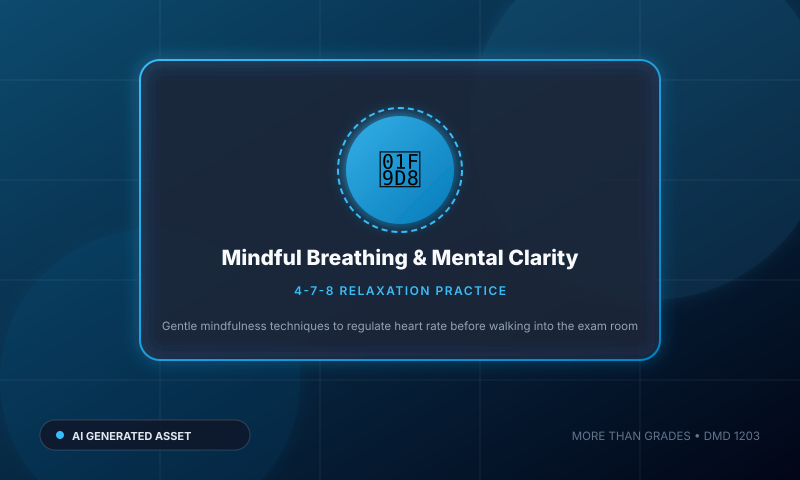

Exam Season Balance..
Study Smarter, Protect Your Inner Peace
An examination is an instrument to gauge current subject retention—not an existential referendum on your intellectual capacity or lifelong potential. Mindful time management and restorative rest deliver exponentially superior academic performance compared to sleep-deprived panic.
Hamad’s Story: Conquering Late-Night Exam Panic
Throughout his first university semester, Hamad treated final exams as emergency crises. He slept barely two hours a night, consumed excessive energy drinks, and entered testing halls with his heart hammering so violently that his mind went completely blank over equations he had reviewed hours earlier.
Under guidance from his academic wellbeing mentor, Hamad transformed his methodology: he chunked study modules into two-week timelines, adopted the Pomodoro technique, and enforced a strict 7-hour sleep rule before examination days. His cumulative GPA jumped significantly the following term, and for the first time, he walked into exams with serene confidence.

The High-Retention Study Methodology
How to study with half the exhaustion while doubling conceptual comprehension
The Pomodoro Framework
Set a timer for 25 minutes of zero-distraction focus, followed immediately by 5 minutes of physical movement and hydration. Repeat 4 cycles, then take an extended break.
Active Recall Mastery
Avoid passive re-reading, which creates an illusion of competence. Close the textbook and write out formulas or teach the concept aloud from memory.
The 4-7-8 Breathing Anchor
If anxiety spikes before the test: inhale through the nose for 4s, hold gently for 7s, exhale steadily through mouth for 8s. This triggers the parasympathetic nervous system instantly.
Seek Help Without Hesitation
Struggling with a complex concept is never proof of inferior intellect. Consult your professor during office hours or join a peer tutoring group early in the term.

Deconstructing the Anxiety Loop
Stress is simply adrenaline indicating that you care; the key is channeling that arousal into organized, proactive preparation rather than procrastination.

Mindful Pauses Restore Clarity
Ten minutes of quiet reflection, gentle stretching, or screen-free campus walks replenishes prefrontal cortex reserves and prevents academic burnout.